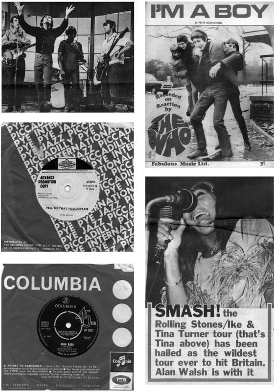

Winchester Cathedral: Times Past, Present and Future

‘Time, time, time, see what’s become of me While I looked around for my possibilities.’
SIMON & GARFUNKEL, ‘A Hazy Shade of Winter’, October 1966
‘Distant Drums’ slowed everything down. With its sparse production, slow tempo and adult message, this record dominated the UK charts in autumn 1966, a time of youth culture ferment and social uncertainty as, three months into the Labour government’s wage and price freeze – austerity by any other name – unemployment was beginning to rise. It might have infuriated modernist teens and musicians alike, but it was another reminder that British pop no longer had any centre. This time around, there was no Beatles or Rolling Stones record to knock the song off its perch.
This drear, dry, death-haunted hit took the listener into an older, more familiar world, where men were men and women were women, where people knew their place and knew their duty, where music could be a balm rather than a provocation. It could have been made at any time during the previous twenty years, appealing to the generation who had reached adolescence, if not adulthood, before rock ’n’ roll, as well as more conservative teenage fans – of whom there were many, as the culture leaders’ quest for experiment and sensation proved divisive.
It was as though a time tunnel had opened up in the swirls of pop modernism. Six places down from ‘Distant Drums’ in the 1 October chart was the debut record by a new group, the New Vaudeville Band. Beginning with a prolonged instrumental introduction, ‘Winchester Cathedral’ resolved into a Rudy Vallee-style vocal that cannily mixed the 1920s with the 1960s – nobody said ‘You’re bringing me down’ in the interwar period – before climaxing with a set of vo-do-de-o’s.
It was a charming confection put together by Geoff Stephens, the former co-manager of Donovan who had successfully turned his hand to songwriting in 1965 with credits like Herman’s Hermits’ ‘There’s a Kind of Hush’ and Dave Berry’s ‘The Crying Game’. As 1966 progressed, Stephens became disenchanted with the state of pop. ‘I think the basic job of pop music is to entertain people,’ he said at the time. ‘But what have we been getting? A deluge of doomy, depressing discs from a scene of poets, messages, freak-outs and psychedelia.’
Stephens’s antidote was ‘a return to happy-go-lucky, slightly tongue-in-cheek music’, the kind of material that he found on his expeditions to street markets and old junk shops. As he told the Melody Maker that October, ‘I’ve got a lot of old records from the Twenties and even an old wind-up phonograph. I dig all that scene.’ With the beginnings of a vaudevillian melody chasing round his head, he decided to perform a piece of creative recycling – taking the old and discarded and making it into something new.
Playing around with the metre, he circled around the phrase ‘Westminster Cathedral’. After some reflection, he alighted on Winchester instead. ‘I had America in mind, where Winchester was a very well known word through Winchester rifles,’ he recalled, ‘and I thought the song would have a wider reach.’ In the summer, Stephens recorded a demo with a stronger electric guitar and electric bass groove. For the finished version, the wood instruments were highlighted, while vocalist John Carter sang through his hands to get that authentic 1930s megaphone feel.
Somewhat to Stephens’s surprise, the song was a big hit, rising to its eventual UK peak of #4 by mid-October. Much of the publicity surrounding ‘Winchester Cathedral’ centred on the fact that 1920s records were cheap and plentiful. This was easily accessible nostalgia, if not concentrated camp, bringing into focus and popularising the nostalgic strain within British and American pop music that had been building ever since the Lovin’ Spoonful dressed up as 1920s mashers to promote ‘Daydream’ and Ray Davies channelled Al Bowlly on ‘Sunny Afternoon’.
Indeed, a partly affectionate, partly ironic take on the 1920s had been part of art-school/jazz culture ever since the smash success of the Temperance Seven in 1961. The Alberts had used this material as part of their theatre of the absurd: their 1962 single featured a thoroughgoing massacre of the 1929 James Hanley tune ‘Sleepy Valley’, backed with a slice of rotten trad, ‘Morse Code Melody’. In 1965, Spencer’s Washboard Kings dressed up in period clothes and released a cover of the 1926 novelty ‘Masculine Women and Feminine Men’.
The Bonzo Dog Doo-Dah Band took up the mantle, releasing two singles on Parlophone in April and August 1966. These featured a raucous take on Kim Fowley’s ‘Alley Oop’, alongside covers of interwar songs: ‘My Brother Makes the Noises for the Talkies’ (1931), ‘I’m Gonna Bring a Watermelon to My Girl Tonight’ (1924) and ‘Button Up Your Overcoat’ (1929). Saxophonist Rodney Slater recalled finding Leslie Sarony’s song ‘Ain’t It Grand to Be Bloomin’ Well Dead’ ‘in my mother’s record collection – a first lesson in how to wind up adults’, while guitarist Neil Innes remembered this material as ‘British pop music from ’20s and ’30s, which was derivative of the proper American jazz, but it was more like sort of bubblegum pop for the Charleston, jitterbugging rich kids at the Savoy Hotel’. The group didn’t invent anything that wasn’t already there. As drummer Legs Larry Smith wrote, ‘As these songs became part of our repertoire, it was a delight to realise that people “once” existed that were just as mad, bad, irreverent and as eccentric as we were. It was comforting in a strange sort of way.’
Fronted by hooligan singer Vivian Stanshall, the Bonzo Dog Doo-Dah Band were an art-school group. Their love of obscure 1920s records was allied to a Dadaist sensibility: their name came from a random word cut-up and their stage shows were augmented by auto-destructive machines (Roger Ruskin Spear had been to Ealing Art School and, like Pete Townshend, had fallen under Gustav Metzger’s spell) and surreal props – word balloons, gorilla suits. To top it off, they wore baggy 1920s suits, short haircuts and co-respondent shoes – then the cutting edge of fashion.
Meanwhile, Geoff Stephens was presented with an urgent problem. He had a hit, but no act. Neither he nor John Carter wanted to tour, so he quickly assembled an ensemble from some session musicians, as well as Bob Kerr, recently sacked from the Bonzo Dog Doo-Dah Band. Stephens found the singer in an old contact, Alan Klein, who had pioneered a vernacular English pop style on his 1964 album At Least It’s British. Renamed Tristram, Seventh Earl of Cricklewood, the working-class Klein was rendered fit for purpose.
The template for the New Vaudeville Band’s appearance was Kerr’s old group, the Bonzo Dog Doo-Dah Band. Dressed in interwar fashions and displaying word balloons during their TV appearances, the group quickly became a pop talking point as the song rose up the charts. ‘What a drag that Vaudeville thing is,’ Bob Lang of the Mindbenders told Disc and Music Echo. ‘It’s so monotonous. I know everyone’s trying to do something original – but this hasn’t come off.’ The group hit back in headlines like ‘Vaudevilles: Stop all the sneering … WE’RE HIP!’
Neil Innes remembered the galvanising effect of their rivals’ success: ‘The New Vaudeville Band was on television looking exactly like the Bonzos did, with their two-tone shoes and gangster suits and all the props – they stole everything. So everywhere we went, people said, “Oh, you’re like that New Vaudeville Band.” So it was “Legs” Larry Smith who said, “Right, let’s do any kind of music.” We said, “Yeah, let’s start writing.” So, in a way, it did us a favour, because we started writing our own stuff and did any kind of music we fancied.’
In the short term, Geoff Stephens and the New Vaudeville Band had the last laugh. Later in the month, ‘Winchester Cathedral’ hit the Billboard Top 100 as the highest new entry. Under the firm tutelage of road manager Peter Grant, Tristram and the others went to America, where they played Las Vegas and appeared on the Ed Sullivan Show. Their success encouraged other musicians to try out versions of the 1920s style that had been the pop music of their parents’ youth. It became a mini-vogue. The hype had become real. The past had become the present and the future.
* * *
‘Happenings ten years time ago
Situations we really know
But the knowing is in the mind
Sinking deep into the well of time.’
THE YARDBIRDS, ‘Happenings Ten Years Time Ago’, released October 1966
Something very strange was happening to time in pop culture during autumn 1966, and ‘Winchester Cathedral’ was only one manifestation of this warp and woof. The unitary drive of modernism had accelerated beyond the point of sustainability. Under this pressure, time was beginning to fragment, from forward motion into a sequence of loops, into either the perpetual now or the historical periods sourced at will by an overloaded media. It was as though the time travel fictionalised by the film version of H. G. Wells’s The Time Machine had come to pass.
There had been various songs about time during the year: Chris Farlowe’s modernist nightmare ‘Out of Time’, or the Creation’s ‘Making Time’, a sneer of cynicism so overarching that it verged on disgust. In July, Dusty Springfield had a UK Top 10 hit with Goffin and King’s ‘Goin’ Back’, which featured a lyric – written and sung by twenty-somethings – about going back to the innocence and ideals of a youth that had just passed. ‘Let everyone debate the true reality,’ Springfield sang, ‘I’d rather see the world the way it used to be.’
Two extraordinary records blew up linear time in their respective quests for a perpetual present. Placed as the last track on Revolver, the Beatles’ ‘Tomorrow Never Knows’ was heard by millions of listeners, a mass market avant-garde artefact that fused radical technology – in particular the use of tape loops, backwards tapes and Leslie speakers – with the most explicit evocation yet in popular culture of mystical transcendence. Its form reflected the circularity of the lyrics, which faded on the end of the beginning.
If ‘Tomorrow Never Knows’ was a perpetually renewing circle, then James Brown’s ‘Tell Me That You Love Me’ completely deconstructed black music, in a sound field of abrasive and futuristic complexity that predicted the manic, hyper-speed breakbeats of jungle thirty years later. Tucked away on the flip of the activist ‘Don’t Be a Drop Out’, ‘Tell Me That You Love Me’ serves as the id to the A-side’s superego: a manic expression of pride and the power of dance that led the listener into something primal and chaotic. The song – it’s almost inaccurate to call it a song, for it’s more an elemental force of nature – began in a live version of Junior Walker’s ‘Shotgun’. It was recorded as part of Brown’s set at Tampa, Florida, in April 1966 for a possible live album. Although sound problems prevented that plan, Brown’s production manager, Bud Hobgood, was determined to salvage something. Taking the live performance as a base – complete with audience exhortations – Hobgood looped Brown’s vocal and added a repetitive guitar figure by Lonnie Mack.
It begins with MC Nat Jones’s introduction. A short brass fanfare follows, before a fast tribal beat introduces Mack’s guitar loops. The audience squeals and whistles, and the volume suddenly jumps. As Brown’s vocal enters, the drums suddenly explode into a direct prefiguring of the ‘Funky Drummer’ beat. The words are nothing; they don’t matter. What does is the way that Brown drives the beat as though everything cannot come fast enough, the other-worldly scream that he unleashes at the end of each verse. It lasts under two minutes, but it sounds like for ever.
The perpetual motion of both these recordings had different sources – the power of spiritual transcendence and the power of dancing as an expression of identity and pride – but they both erased present, past and future in an everlasting Now. As the Byrds sang on that summer’s ‘5D (Fifth Dimension)’, ‘And I will remember the place that is now / That has ended before the beginning.’ The impact of psychedelic drugs was transforming white pop culture, at the same time as the increasing assertion of Black Power was filtering into dance music.
It wasn’t just in pop music, either. The second half of 1966 saw a variety of assaults on modernist time, from high and low art, from the avant-garde and the mainstream media. In late September, Pathé News filmed one of Yoko Ono’s performances of ‘Cut Piece’. She sits, impassively, as a fellow artist cuts away her outer garments until she is in her underclothes. It was a barbed comment about the nature of male violence towards women that echoed Allan Kaprow’s fifth admonition on ‘How To Make A Happening’: ‘break up your time and let it be real time’.
Even more so than the efforts of the extreme avant-garde or the spread of LSD, it was the unprecedented and unreckoned effect of the mass media that helped to explode conventional definitions of time. For the increasing pace, penetration and interrelation of the various parts of the media economy – television, film, pop music, magazines, newspapers – were locking people in the West into another kind of perpetual present: not that of transcendence or pride, but of a febrile, destabilised consumerism.
The Time issue for 14 October 1966 ran a cover story on television: ‘the Electronic Front Page’, ‘the Most Intimate Medium’. The article was focused on news coverage and the famous news anchor Walter Cronkite – a towering figure. It acknowledged the transformative, if not corrosive, power that the medium had within American life, citing Morley Safer’s emotive reports from Vietnam and concluding that ‘as a result of its extraordinary impact, TV news has become a powerful force encouraging social ferment’.
That autumn, Marshall McLuhan discussed what he termed ‘The Invisible Environment: the Future of Consciousness’. His article observed the impact of the new media totality: ‘The young person today is a data processor on a very large scale. Some people have estimated that the young person, the infant and the small child, growing up in our world today works harder than any child ever did in any previous human environment – only the work he has to perform is that of data processing.’
The media were, in effect, creating two tiers of perception, a time slip between past and present, between those born in the time of the mass media and those born before it tightened its grip: ‘Growing up has become, in the age of electrically processed information, the major task of mankind. We still have our eyes fixed on the rearview mirror looking fairly and squarely at the job that is receding into the 19th century past … the kind of contrast between these situations creates an absurdity.’
One by-product of this was a generation gap, as sixties teenagers surfed a proliferating media with an ease that their elders could only envy: as McLuhan wrote, ‘the future of consciousness is already assuming a very different pattern’. Another by-product was the need for more and more content, not just in news, but in features, drama, fantasies. The mass media were all-consuming: not only did they turn the present into the past as soon as it had happened but they began to cannibalise the past through the filters of the moment.
In their voracious need for new material, film and television had already begun to raid outsider subcultures: bohemians, artists, homosexuals. The media sensation of 1964 and 1965, thanks to the surveys by Susan Sontag and Gloria Steinem, camp was all-pervasive in autumn 1966. It had become a fact of life – not just an expression of deviancy or cool or distance but a basic way of processing data, of dealing with an onrush of information from many different times and viewpoints, a method of navigating a schizophrenic consciousness.
In the summer of 1966, two new series had debuted, both concerned with time travel. Launched in early September, NBC’s Time Tunnel was set in the near future, 1968. The plot concerned the development of a literal time tunnel, which was under the threat of governmental cutbacks. In order to prove its efficacy, two of the scientists on the project enter the vortex and find themselves travelling through various times and places, prevented from returning to the present yet unable to prevent the disasters that, through their historical knowledge, they know will occur.
The treatment was fairly straightforward. The first episode took the two scientists to 1912, where they found themselves on the Titanic, with the inevitable results, and left them suspended in a ‘time limbo’. In the second episode, they projected ten years into their future, 1978, taking a space flight to Mars. After travelling to 1910 (a mining disaster) and 1941 (Pearl Harbor), the pair alighted in the nineteenth century for the episode of 6 October, ‘The Last Patrol’, where the action took place during the final battle of the Anglo-American war of 1812–15.
On the same day, the BBC showed the fifteenth episode of Adam Adamant Lives!, ‘The Village of Evil’. Debuting in late June, the series was designed to take over the audience schooled by The Avengers in prime-time surrealism. The central conceit – as shown in the opening episode – was that the titular hero, an Edwardian soldier and spy, has been cryogenically frozen by a masked villain, The Face, and hidden in a derelict building. Disturbed by urban regeneration and discovered in his block of ice, Adam is pitched forward fifty years into the Swinging Sixties.
The six-minute sequence where Adam Adamant attempts to get his bearings in this harsh future is full of soundtrack distortion, echo and oscillating camera focus. It’s all about the shock of the new. The difference between then and now is adroitly exploited by the script. ‘Is it war?’ Adam says as he staggers around a brightly lit Piccadilly Circus. ‘What infernal place is this?’ Rescued by Georgina, an ‘archetypal’ Swinging London dolly bird, he is taken to her flat, while all the time marvelling at her ‘masculine attire’, which is part of ‘the madness outside’.
Like The Avengers, Adam Adamant Lives! dressed up conventional crime plots with a dose of absurdity, an air of apocalyptic threat and a certain sly self-mockery. ‘I think it’s all a current part of the craze for art nouveau,’ says a pompous police inspector as he guards the hero in his Edwardian clothes. This, of course, was part of camp: it was no longer enough to present the play, it had become important for the play to contain historical information and for it to include its own commentary – the lessons of the avant-garde streamlined for the mass market.
In the November 1962 issue of Scene, the painter Pauline Boty had talked about the relationship of past and present. As she moved towards pop art, Boty defined her aesthetic as ‘Nostalgia for NOW’: ‘People have this kind of nostalgia for Victoriana and we have a nostalgia for things that are now … it’s almost like painting mythology, only a present day mythology – film stars etc.’ ‘Nostalgia for NOW’ was a perfect slogan for the mid-sixties: grasp the moment and it had gone.
In the UK, high Victoriana was replaced by the fin de siècle as 1966 progressed. Klaus Voormann’s cover for Revolver reproduced the spidery filigrees of the artist Aubrey Beardsley, who was the subject of a major retrospective at London’s Victoria and Albert Museum that summer. Beardsley was also echoed by Nicholas Ferguson in his set design for the Rolling Stones’ May appearance on Thank Your Lucky Stars, where Mick Jagger crooned ‘Lady Jane’ in a set that depicted stone-faced, hieratic beauties straight out of the symbolist textbook.
Consistency and fidelity to the original source material was not the point. Like the scientists in Time Tunnel, it was becoming possible for designers, musicians, film-makers and artists to travel freely through time and space. It was the time of the 1910s and the 1920s. During 1965, Paul Flora published Vivat Vamp!, a collection of found postcards that he assembled into a book in praise of the type, ‘from Mae West to Marilyn Monroe, from Marlene Dietrich to Brigitte Bardot’. On the cover was a photograph of the first vamp, Theda Bara, at her most sultry.
In fashionable London, the silver and op designs of high-sixties modernism were already being superseded at their moment of maximum impact. In February 1966, two young entrepreneurs opened a boutique called I Was Lord Kitchener’s Valet right at the bottom end of Portobello Road. The shop’s stock of nineteenth-century military uniforms soon attracted the cognoscenti – most notably Mick Jagger, who in spring 1966 bought the red Grenadier Guards drummer’s jacket that he wore to great effect on his May Ready Steady Go! appearance.
The retro style of I Was Lord Kitchener’s Valet filtered quickly into Carnaby Street, as well as providing a song title for the New Vaudeville Band. Around the same time, a boutique called Granny Takes a Trip opened at the unfashionable end of the King’s Road – at number 488, beyond World’s End. This was a time-tripping exercise, that looked back (Granny) at the same time as it looked forward (Trip = LSD). Launched by tailor John Pearse, designer Nigel Waymouth and their partner Sheila Cohen, it sold antique clothes as well as proto-hippie oriental exotica.
Granny Takes a Trip would change its facade many times, in a kind of boutique performance art, but its opening decor used art nouveau graphics in orange on a black background, while in the window was a large image of an Edwardian vamp reclining on a chaise longue. As John Pearse told Max Décharné in his history King’s Road, ‘We were dealing in vintage clothes. What appealed to us was Aubrey Beardsley and the Victorians, “Against Nature” by Huysmans. So we were all doomed Romantics at the time.’
As 1966 wore on, the antique clothing began to dry up and Pearse began making new items out of Liberty fabrics. The Beatles wore some of his shirts and jackets on the back cover of Revolver. This was a far cry from the defined shapes and tough attitude of the mods, mirroring two periods (the 1890s and the 1960s) when youth was vigorous. As Nigel Waymouth remembered, ‘We started making clothes for men and women. In fact, both hung on the rail, side by side. We were androgynous in that sense. That was part of the look of the time.’
The shop didn’t stand still, changing from a futuristic, computer-style facade to a large portrait of Native American chief Low Dog, before shifting again to an idealised 1930s female, loosely based on the blonde bombshell Jean Harlow. Quite apart from the tailoring innovations brought about by Pearse, the shop was, as Waymouth put it, an ‘art concept’ – a living experiment on the nature and the transience of nostalgia.
In 1966, Granny Takes a Trip was bang up to date. Even so, its flight into the past served time on Swinging London, not that many people truly believed in that any more. Indeed, two singles released that October promoted two separate films that sought to deep-mine the youth revolution that had appeared to grip the capital during the previous two to three years. Of course, the fact that people were making films about Swinging London only reinforced the fact that it was over and, to the extent that it had ever existed, was receding into memory.
Paul Jones’s first solo single after leaving Manfred Mann, ‘High Time’, was released at the end of September. Written by Mike Leander and Chas Mills, it was a commercial number in the mode of the moment, with booming drums, a thin string section and a bouncy melody that modulated nicely into the chorus. The barely coherent lyric punned on the keyword ‘time’ for all that it was worth, drilling the title phrase into the brain: ‘High time, long time / Day time, night time.’
Jones had been a major star with Manfred Mann, and his decision to go solo was big news. He was articulate and thoughtful, and his interviews around the release of ‘High Time’ were much more interesting than the record. Rave put him on the front cover of their September issue, and followed it up with an exclusive piece in October that centred around the shoot for Privilege, a new feature film directed by Peter Watkins: his follow-up to The War Game was a drama about the harnessing of pop’s power in the near future by a clerico-fascist regime. As Rave’s Maureen O’Grady wrote, in her explanation of the film’s storyline: ‘“Privilege” is a hard, bitter yet sometimes comic story of a young singer, manipulated to international fame by his manager, agents, the T.V. and Press. The film is set in 1970. “It has to be,” says Paul, “because this fellow I play, Stephen Shorter, is someone ten times bigger than the Beatles in popularity. If the film was set in 1966 it would be unbelievable, because everyone knows at the moment that the Beatles are the biggest thing in the world. Dating it 1970 makes it possible.”’
The Rave feature begins with one of the film’s key scenes. Exploited for the regime’s ends, Steve Shorter delivers an explosive, self-loathing rant: ‘I’m nothing … nothing. I’m a person the same as everyone else. I’ve got two arms, two legs – I’m a person. I’m not perfect. I’ve done terrible things. I’ve slept with girls, and they’ve meant nothing to me. But you’ve made me an idol. You’ve made me this perfect statuette. I’m nothing … and that’s what you made me. And … and … I hate you. I hate you. I hate you for what you’ve done to me!’
On the face of it, Privilege was shaping up as an overwrought version of Thom Keyes’s All Night Stand. The film was based on an interesting idea – pop not as rebellion or youth expression but as a method of social control – but what Rave ignored on their brief visit to the set was that Jones was no actor, a fact that would become brutally apparent on the film’s eventual release. Still, Peter Watkins was right about one thing: by 1966, pop music had become all-pervasive and powerful enough to warrant governmental scrutiny, if not control.
On 11 October, Major Oliver Smedley was acquitted on a manslaughter charge at Chelmsford Assizes. This was the last act in a complex, violent case that had blown the world of pirate radio wide open. It had begun in spring 1966, when Reg Calvert, the owner of Radio City – based in an offshore wartime fort called Shivering Sands – entered into negotiations with Radio London to relaunch the station. A couple of Radio London disc jockeys went to visit the fort and were appalled by the primitive living conditions and the state of the equipment. The problem for Calvert was that the ownership of the transmitter was disputed. Major Smedley, who had been part of a consortium of rival bidders, believed it was his, and was infuriated by the news that it was going to be sold. A former paratrooper, Smedley took matters into his own hands. Taking along a crew of sailors – there was a seamen’s strike at the time – he stormed the fort on the night of 19/20 June and held everyone on board to ransom. The station went off the air and, having posted some guards, Smedley returned to land.
Things escalated at a meeting held later that day in London. The managing director of Radio London refused to negotiate under duress. Calvert was beside himself. Having received no assistance from the police, who thought that the offshore structure was outside UK jurisdiction, he went round to Major Smedley’s Essex house on the evening of 21 June to demand the return of his fort. In the ensuing confrontation, the major took a shotgun and shot Calvert dead. It could have been a fantastic plot line from The Avengers, but it was real.
Such naked piracy concentrated the minds of the Labour government. The pirate stations had long been a thorn in the authorities’ side, offering unrestricted content and threatening the monopoly of the BBC as the state broadcaster. They had a large audience among the nation’s youth: in July, the UK National Opinion Poll estimated that Radio Caroline had nearly 9 million listeners, with Radio London not far behind with just over 8 million, and Radio City trailing with 2.5 million. Even so, that was getting on for 20 million British citizens.
Legislation had been on the cards for a while, but the matter had not been a high priority for the government. The shocking violence of the Calvert case and the storming of Shivering Sands was a reminder that, beneath the stations’ glossy surface, all was far from well. On 1 July 1966, the Marine, &c., Broadcasting (Offences) Act was brought before Parliament, the first stage in a long process that would see almost all the pirates off the air by the end of 1967. This was not a popular move among musicians, fans and the British music industry in general.
In September, the Yardbirds’ former manager Giorgio Gomelsky launched his Marmalade label with a Beach Boys-styled record called ‘We Love the Pirates’, written by Geoff Stephens and John Carter and performed by a studio group called the Roaring 60s. ‘The government wants to close them down,’ intoned the singer, ‘but we want them to stay [cue sobbing noises].’ It was, obviously, a fixture on pirate radio playlists, reaching #24 in the Radio Caroline South countdown in mid-September.
In early October, Disc and Music Echo published an article, ‘They’re Coming to Take Us Away, Yo Ho!’, which quoted Simon Dee, a former Radio Caroline DJ: ‘All I want and I am sure most people in Britain want is to switch my radio dial to whatever station provides the sort of broadcasting I like.’ George Harrison also spoke out: ‘The government makes me sick. This is becoming a police state. They should leave the pirates alone. At least they’ve had a go, which is more than the BBC have done.’
The case of the pirates was an early salvo in the hotly contested battle between free enterprise and state regulation. In 1966, however, it was hard for teens not to see the government as determined to spoil their fun. The squeeze on the pirates marked the death knell of the open culture that had marked Britain’s rise to international pop prominence during the previous two years. The charts would soon be full of mums-and-dads records, while innovative singles from America and the UK would be denied radio play and, as often as not, shut out of the Top 20.
Between 12 and 14 October, the Yardbirds were on a set at Elstree Studios, to the north of London, filming a sequence for Michelangelo Antonioni’s Blow-Up, in which they ran through their version of ‘The Train Kept A-Rollin’’ – reworked as ‘Stroll On’ because of copyright problems. The script called for lead guitarist Jeff Beck to smash his instrument. This was not a regular feature of the Yardbirds’ performances, but Beck performed the task with a droogish gusto.
The second half of 1966 saw the Yardbirds falter. ‘Shapes of Things’ was not a stepping stone to greater things, but a peak. The group managed to sustain the momentum with the attitudinal ‘Over Under Sideways Down’ – ‘When I was young people spoke of immorality / All the things they said were wrong are what I want to be’ – which scraped into the Top 10 in the UK, but the pop press was full of reports about illness and exhaustion. By September, when they were performing on the Rolling Stones tour, they were seen as – that cardinal sixties sin – old hat.
Bassist Paul Samwell-Smith had quit in June after a particularly drunken performance by Keith Relf at a May Ball in Oxford. At one stroke the Yardbirds had lost their principal composer and musical arranger. They regrouped by adding Jimmy Page, first on bass and then on guitar, and it was this line-up that performed in Blow-Up. They were not the director’s first choice, but the Yardbirds gave a spirited performance in front of a deliberately static, alienated audience, dressed in the latest fashionable PVC, bright orange and purple.
In the final sequence, the equipment malfunctions about two minutes in: Beck smashes his guitar against the amp. More bashing ensues, before the guitarist throws the instrument on the floor, breaking the neck. After ripping the strings off, Beck throws the neck into the crowd, which, as if at the flick of a switch, transforms from sullen silence into a clawing, hysterical mass. In the fight to get the totemic guitar part, the film’s protagonist, David Hemmings, prevails. He leaves the club, chased by fans, before he comes to his senses and quietly drops the item in the street.
This was a graphically illustrated point about the nature of idol worship and the transience of pop objects. Antonioni had come to London a few months earlier to begin shooting Blow-Up, with the intention of capturing the feeling of London. ‘When I am shooting a film,’ he said in September 1966, ‘I always try to establish a rapport between characters and landscape. I am most of all enthusiastic about the urban landscape. I like the city. What progress there is goes in the cities, and I want to be a witness.’
According to Continental Film Review, the film aimed to capture ‘twenty-four hours in the life of a jaded fashion-photographer set against the world of London fashions, dolly-girls, pop groups, beat clubs, models, parties and, above all, the “in” photographers who more than anyone else, have promoted the city’s new image … and such names as David Bailey, Terry O’Donovan, Brian Duffy, David Montgomery, John Cowan are seldom out of heavy type in the society columns’.
Blow-Up would reveal itself as a carefully wrought parable on the nature of perception, blurring the lines between reality and fantasy in a way that exposed the period’s ellipses of communication. David Hemmings is haunted by a murder that he has witnessed in a south London park. He thinks he has caught it on camera, but the film is stolen. He returns to the park, but there is no body. His previous cynicism and laddish certainty evaporates in the face of this mystery, which exposes the limits of mediated reality: if it is not on camera, then does it exist?
Shot between April and October 1966, Blow-Up also offered a documentary record of London between the frantic forward motion of Swinging London and something non-linear, blurred, ambiguous. In a sequence near the end of the film, Hemmings visits a drugged party held at a dimly lit, exquisite location – Christopher Gibbs’s apartment in Cheyne Walk. Stoned out of his mind, he misses his last chance to tell anyone about the death he witnessed. He is unable to communicate his concern: was the murder real or had he dreamed the whole thing?
The sequence is beautiful and seductive, a door into a gilded life half glimpsed. This was the world that, by the autumn of 1966, the Beatles and the Rolling Stones and the smart end of pop were inhabiting: arty, drugged, closed to the general public. The openness of spirit and class mobility that had characterised the public image of Swinging London were evaporating in the face of an economic downturn. The tide was ebbing away from the capital, and it left a hollow, after-the-party hangover. Had Swinging London ever existed or had it just been a collective fantasy?
The Yardbirds – one-time avatars of all that was progressive and exciting – fell foul of this change in the weather. A week before their appearance in Blow-Up, they released their eighth UK single, ‘Happenings Ten Years Time Ago’. Recorded in the high summer with the two-guitar line-up, it was a compressed pop art explosion, with a ferocious staccato guitar figure, a massive descending riff, a roiling instrumental break and LSD-inspired lyrics that questioned the construction of reality and the nature of time: ‘Was it real, was it in my dreams? / I need to know what it all means.’
‘Happenings Ten Years Time Ago’ was not well received. The usually benign Penny Valentine savaged it in Disc and Music Echo: ‘I have had enough of this sort of excuse for music. It is not clever, it is not entertaining, it is not informative. It is boring and pretentious. I am tired of people like the Yardbirds thinking this sort of thing is clever when people like the Spoonful and the Beach Boys are putting real thought into their music. And if I hear the word psychedelic mentioned I will go nuts.’
Like ‘Have You Seen Your Mother, Baby, Standing in the Shadow?’, the Yardbirds’ latest record seemed to sacrifice melody and coherence in favour of sensation and needless obscurantism. The musicians were seen as overreaching themselves; they had lost an influential reviewer and were in danger of losing their audience. Over the next few weeks, ‘Happenings Ten Years Time Ago’ would flail around in the lower reaches of the Top 50, a major blow for a group who had had five Top 10 singles in a row. The Yardbirds had gone from heroes to bores in eight months.
Where the sharp end of pop led, many teenagers no longer wanted to go. Here was Marshall McLuhan’s two-tier consciousness in action within a supposedly transformative popular culture, between those who wanted to forge ahead at the pace set by the previous two years and those who could not, and would not, follow. It was a fact that many listeners could hear in the records: in an attempt to sustain the unsustainable pace of mid-1960s pop, the musicians risked unintelligibility as they sped up and compressed their records to the point of no return.
There was a profound disconnect between the London pop-star elite and many provincial teenagers, who were left feeling high and dry now that the tide was receding. When Disc and Music Echo’s Bob Farmer visited Newcastle that autumn, most of the young people he talked to – around 80 per cent – said that they wanted to leave the city. They felt that they were stuck in the north-east and that Britain – thanks to the wages freeze – was no longer a country of opportunity for young people. The Newcastle teens complained about the lack of money, the dullness of TV and the lack of any decent nightlife, and bickered about whether or not John Lennon was right in saying that the Beatles were more popular than Jesus. In the unkindest cut, a couple of interviewees repudiated the whole basis of the country’s high profile in the high sixties. ‘I’m sick of the British pop scene,’ said Bill Rogan, while Bernard Thwaites thought that ‘British pop is terrible – the American discs are far better’.
* * *
‘The new factor in U.S. race relations and politics that has come to be known as backlash is more than merely the reaction of some white people to Negro rioting or cries of “black power”. The attitude of many white Americans is influenced by the belief that the Negro has made great gains in a relatively short time, and that he now would do better to stop agitating and consolidate what he has won. At the same time, much of the new black militancy is a result of frustration over what many Negroes consider their snail’s pace of progress.’
Time editorial, ‘What the Negro Has – And Has Not – Gained’, 28 October 1966
The tensions of the time – between pressing forward and pulling back – were also playing out in America’s civil rights movement. For the previous decade, Martin Luther King and the SCLC had succeeded in pulling together all the different strands of radicalism and conservatism, of revolution as well as gradual change, but, after the last show of unity at the March Against Fear, these skeins were unravelling at an alarming rate.
The backdrop for this uncertainty was the flowering of black American dance music. In the Billboard chart for 1 October, there were three Motown songs in the Top 10: at #2, the Supremes’ ‘You Can’t Hurry Love’; at #3, the Temptations’ ‘Beauty Is Only Skin Deep’; and the Four Tops’ ‘Reach Out I’ll Be There’ at #7. Motown had two more in the Top 30: Jimmy Ruffin’s ‘What Becomes of the Brokenhearted’ (#19) and Junior Walker and the All Stars’ ‘How Sweet It Is’ (#21).
This was some kind of golden age, but the optimism and strength of these records was not reflected in black politics or black lives. The civil rights movement had shaped and seen itself reflected in the records that Motown and Stax put into the mainstream. Quite apart from consciousness-raising efforts like Brenda Holloway’s August single, ‘Play It Cool, Stay in School’, the lyrics of songs like Stevie Wonder’s cover of ‘Blowin’ in the Wind’ or ‘Reach Out I’ll Be There’ offered advice and sustenance to communities and politicians under extreme duress.
James Brown stepped into explicit engagement with his late-September single, ‘Don’t Be a Drop Out’. His experience on the March Against Fear had stoked his social conscience. Set to a mid-paced groove, the song told a simple story with a simple moral: get an education and get ahead. ‘I was a drop-out at 16, but I was forced to,’ Brown told KRLA Beat’s Rochelle Reed. ‘But now the only way to get a decent job is to finish high school, and even that’s not enough today. School is your only weapon! If you don’t finish, you might as well be dead.’
The record was not a big hit, but it was the start of something for Brown. ‘I wanted to build a whole campaign around it. As soon as the record was pressed, I took the first copy to Hubert Humphrey at the White House and told him what I had in mind.’ Brown ‘visited schools and talked to kids. I told them to stay in school, listen to their teachers, and stay close to their books. They were there to take care of business.’ But these positive interventions had a grim counterpoint.
On Saturday 1 October, the riot at Hunters Point, a poor and isolated ghetto south-east of San Francisco, was slowly petering out. It had begun four days previously, when a sixteen-year-old black teenager, Matthew ‘Peanut’ Johnson, was shot and killed by an SFPD patrolman. He was one of a group of young men who had abandoned a suspect car as the police approached. The weather was muggy, and a large angry crowd gathered immediately at the place of Johnson’s death. Tensions quickly escalated.
It was exactly the same situation as Watts: hasty police action triggering an enraged response. While community leaders attempted to calm the situation, the mayor of San Francisco addressed ‘an unruly’ crowd on the evening of the 27th. Rocks were thrown at him and his entourage. By this time, the disturbances were not so much about the death of a young man but a chance to get back at the white power structure that many young blacks felt was racist and holding them back, patrolled by trigger-happy policemen who gunned them down like animals.
The mutual incomprehension between the police and the young men of Hunters Point was complete. They were all American citizens, but they were living in separate worlds. The riot escalated dramatically after the police opened fire on a community centre: after riddling it with bullets, they stormed the building only to find ‘several huddled, cowering children of preteen age’. Full-blown mayhem then ensued, the disturbances spreading to the Fillmore district and resulting in the deployment of 2,000 National Guardsmen and the imposition of an 8 p.m. to 6 a.m. curfew.
This news compounded what had been a dreadful couple of months for the civil rights movement. It was as though some invisible line had been crossed: the movement had seen enormous gains over the last few years, but the continuing violence fuelled a wave of criticism of both the movement and President Johnson’s civil rights legislation. In the mass media the idea prevailed that things had gone too far, too fast. Suddenly, the phrase ‘white backlash’ entered everyday usage.
It had been another long, hot season, with disturbances in the Hough district of Cleveland, Omaha and St Louis. In addition, the situation in Chicago was out of control. On 4 September, an SNCC splinter march passed through Cicero, the blue-collar suburb and one-time Capone stronghold that had seen a major race riot in July 1951. The 250 marchers faced a spitting, howling, brick-throwing mob. The level of hatred was unprecedented, as hundreds of whites came out to protest, holding placards reading ‘White Power’.
Two young film-makers from the local Film Group Inc., Mike Shea and Mike Gray, walked among the marchers. Edited into a nine-minute piece, Cicero March is an astonishing documentary, taking you right into the madness of 1966. It’s a sunny day, but the feel is completely oppressive. Funnelled down streets narrowed by the weight of protestors on the sidewalks, the marchers fight the cops, who fight the protestors. Helicopters buzz low, while National Guardsmen line the top of buildings. Rifles and batons abound: it feels like a war zone.
At the film’s beginning, the marchers are quiet and dignified. Middle-aged onlookers openly shout racist remarks, while local youths brandish swastikas and keep up a non-stop barrage of threats. These are not the long-haired, mod-dressed young of the day’s pop culture, but greasers with short hair and work clothes, T-shirts – garb little changed since the 1950s. ‘Chicago is notorious for its number of greasers,’ wrote former resident Mick Rogers that year. ‘Dance spots in the aptly-named “Windy City” still feature the old-style rock ’n’ roll of 1958 or so.’
The greasers needed no encouragement in bringing trouble down onto the heads of the negroes and whites peopling this alien invasion. The marchers were in the mid-1960s but, to all intents and purposes, they were walking through the 1950s. The police line separating the marchers and the protestors is only one-deep and, towards the end of the film, an imposing gentleman in shades and a pork-pie hat talks back to the jeering whites, making ‘come and get it’ gestures and exploding in a rash of expletives.
Clearly, the concept of non-violence was fraying at the edges. The man of the moment was not Martin Luther King but Stokely Carmichael, whose national profile had grown and grown since June. While King retreated after the comparative failure of Chicago, Carmichael, on the other hand, was revelling in his new-found fame, spreading the word in a non-stop series of speeches and television appearances. ‘No other man,’ wrote the historian Lerone Bennett in an Ebony profile, ‘with the possible exception of Martin Luther King, has risen so far so fast.’
It was a confusing period for the twenty-five-year-old, who was both analytical and impulsive. On the one hand he had become a celebrity, meeting the likes of Muhammad Ali and delivering his vision to enthusiastic audiences. On the other, the attention that he received was drawing him into uncharted territory, where fame elided with notoriety, where provocation was matched by an even stronger reaction. But Carmichael couldn’t stop himself either. Sometimes it seemed that he was acting up to his public portrayal.
In August, he urged blacks to refuse military induction in two major speeches – in Detroit and Harvard University – and then went on the nationally syndicated TV show Meet the Press to spread the message, stating that America’s involvement in the war was immoral. This was heartfelt and very much to the point, as the percentage of black draftees was far higher than their white counterparts, but it was also red rag to a bull, bearing in mind that the majority of Americans still supported the war.
It seemed as though Carmichael’s slight, feline frame had become a lightning rod for America’s fault lines: white versus black prejudice, urban riot, the Vietnam war – all the violence of a toxic society. On 16 September, he was released on bail, accused of inciting a riot at a demonstration in Atlanta; that same day, the 1966 Civil Rights Bill was defeated in Congress – the victim of a filibuster by the Republican minority leader, Senator Everett Dirksen. It was the first legislation of this nature to fail in nine years.
In early October, Time reported on a Gallup poll that logged considerable ‘resistance of whites to improving the lot of Negroes’: ‘52% of them think that the Administration is pushing integration “too fast” – as against only 32% when the first survey was conducted in 1962’. As if to confirm this shift of power, the same issue had a cover story on ‘California’s Governorship Race’, with an idealised portrait of Ronald Reagan – the new rising star of the Right.
In autumn 1966, Reagan was on the crest of a wave. He was a sharp, elusive operator, cannily avoiding questions about his right-wing affiliations while promoting a classic laissez-faire agenda. He directly addressed public concerns about the apparently unravelling social fabric, speaking out passionately against rising crime levels, moral turpitude – epitomised by the ‘beatniks, radicals and filthy speech advocates’ at the University of California, Berkeley – and the riots that seemed to be spreading through the cities of the state. Reagan stood for old-fashioned values: the right of business to be unimpeded, the rule of law and order and, above all, patriotism. In his eyes, student protestors were, quite simply, un-American and treasonous. He did not speak for the young but for their parents, the large number of middle-aged Americans who had either served or lived through the war, and had participated in the country’s great expansion during the 1950s. This generation could not understand why a section of their young did not want to offer themselves as cannon fodder for an undeclared war.
Nor could they understand why, now that blacks were getting some recognition of their civil rights, they were demanding more and more. In turn, Reagan was not concerned with the black vote: a March 1966 debate with black Republicans – supposedly on his team – was a near disaster, with the candidate storming off stage after his opponent, George Christopher, invoked against him the spirit of Barry Goldwater and, by implication, his John Birch Society affiliations. This was a rare crack in an otherwise seamless facade.
As the year continued, these positions would become ever more entrenched. The spiral of escalation was unstoppable: neither side could understand each other, and the lack of comprehension turned, on the one hand, to the desire for repression and, on the other, to the desire for ever greater assertion. The twinned genies of Black Power and White Backlash were on the loose and, in mid-October, the pressure was ratcheted up a further notch by the publication of an extraordinary manifesto called ‘What We Want, What We Believe’.
It was the product of two Oakland natives, Bobby Seale and Huey Newton. Both were in their late twenties and both had been involved in black politics since the early sixties, most recently in the Marxist Soul Students Advisory Council. Both had had a hardscrabble upbringing marked by poverty, family violence and confrontations with authority; both had pulled themselves up by their own efforts and attended college, during which time they developed a theoretical framework to focus their anger at everyday American racism.
Influenced by the Revolutionary Action Movement, which held that the struggle for black American rights was part of the global struggle against imperialism and that black Americans should not serve in the war, they began to protest about Vietnam. At the same time, they were inspired by the activities of two local Oakland activists, Mark Comfort and Curtis Lee Baker, who were advocating the use of militant styles – black berets and black uniforms – to project discipline and counter police brutality.
Newton and Seale’s anger was crystallised by the events in Hunters Point and the perennial police pressure in Oakland. Newton was inspired by an August 1966 article in the Movement, the West Coast SNCC paper, which reported the activities of a Community Alert Patrol in Watts. The CAP had begun driving round the area to monitor police brutality and, in August, began to display a Black Panther logo on their vehicles. Their mood was not conciliatory: as one CAP member told the Movement, ‘There’s only one way to stop all this, and that’s to get out our guns and start shooting.’
Newton and Seale decided to form their own patrols in communities like Richmond, Berkeley and Oakland, but first they needed what Newton called ‘a practical course of action’. As he wrote in his autobiography, ‘We could go no further without a program, and we resolved to drop everything else, even if it might take a while to come up with something viable. One day, we went to the North Oakland Service Centre to work it out. The Center was an ideal place because of the books and the fact we could work undisturbed.’ It took twenty minutes.
‘The Black Panther Party Platform and Program’ was heavily influenced by Malcolm X and Stokely Carmichael, but it went further than any black activist manifesto had gone before, particularly in the sections that began ‘I believe’, which cited ‘the slaughter of over fifty million Black people’ by ‘the American racist’ and the blanket refusal to fight in the military. But buried in the sixth point was the time bomb, as Newton and Seale wrote: ‘We will protect ourselves against the force and violence of the racist police and the racist military, by whatever means necessary.’
* * *
‘Amsterdam, London, San Francisco – not Copenhagen – are where the action is.’
DAVE ROTHLOP, letter to The Psychedelic Oracle issue 2, October 1966
The Hunters Point disturbances reverberated through San Francisco. The Fillmore district was right at ground zero as the unrest spread to other black communities in the city, and the Haight hippies found themselves in the middle of a riot zone. Gene Sculatti remembers leaving a Muddy Waters/Paul Butterfield/Jefferson Airplane show at the Fillmore at two in the morning to find ‘the surrounding neighborhood in flames, cops in cruisers, rioters and panicked neighbors in the streets. We gave a lift to a couple of scared kids.’
The Fillmore Auditorium was an island of sanity amid the turmoil. ‘Huge rubber balloons were being bounced round the dance floor like giant basket balls,’ Ralph Gleason wrote. Muddy Waters was ‘smiling and playing like his heart and his life depended on it. It was beautiful. He was beautiful, and later, when the Butterfield band played, Mike Bloomfield and Elvin Bishop were in the same mood, playing as if possessed by a mission. They all heard the call this weekend. Art vs. force and violence. And they responded.’
It was a crucial time for the San Franciscan ‘Youth Quake’. The level of activity from within the subculture was increasing, just at the moment when it was beginning to get national attention. At the same time, many of the participants, who had radical and civil rights backgrounds, were galvanised by the events at Hunters Point and, nearer to home, in the Fillmore district. Quite apart from any interracial solidarity, the police oppression directed at the black community could also be turned against the city’s increasing number of alienated young bohemians.
The Oracle caught the mood in its favoured beat prose style: ‘About five in the afternoon a slowly cruising squad car did an angry u-turn &, with 5 gun barrels pointed out its windows, stopped its swerve abruptly in front of a young long-haired bearded man with yellow boots & a blonde, long-haired girl. “Get off this street, boy – NOW,” “git”, another voice from within, and a mumbled – “damn niggers,” for the boy was brown skinned and he and his fair maid were on Haight & Ashbury on a sunny afternoon.’
With their radical backgrounds and desire for community involvement, members of the Mime Troupe, the Artists Liberation Front and the Diggers got involved in protests against the police action. On Saturday the 29th, while the disturbances were still raging, over ninety people were arrested at a Students for a Democratic Society march against the deployment of the National Guard. Later that night, two members of the Diggers, Billy Murcott and Emmett Grogan, put up posters on Haight Street urging people to defy the curfew but to avoid confrontation.
The next day, the group published one of its very first leaflets. ‘A-Political Or, Criminal Or Victim Or Or Or …’ was a scathing attack on American society, given extra impetus by the fact that areas of inner San Francisco had been turned into a war zone, with an occupying army:
You’re born a citizen of a nation.
A citizen of a nation with rulers who legislate rules commanding you to be free.
Free to be conditioned in school until you’re sixteen.
Free to be a compulsory soldier.
Free to pay sixty percent of your taxes to the military budget.
Free to work for a minimum wage.
Free to vote when you’re twenty-one.
Free to vote for the democratic or republican party of your choice.
Free to buy clothes, food, and property from the 200 corporations which account for 45% of the total U.S. manufacturing in 1966.
Free to obey arbitrary curfews.
Free to have your freedom regulated by officers who are your friends and who protect you.
The Diggers emerged out of the San Franciscan Mime Troupe and the Artists Liberation Front, radical groups that sought to involve the community in their artistic practices and, indeed, to break down the barriers between art and life. The Mime Troupe had been involved in the very beginning of the city’s resurgent music scene. In late 1965, the Family Dog held two major shows to raise funds so that the Troupe could fight an obscenity bust; the second was held at the Fillmore Auditorium, and was promoted by the Troupe’s business manager, Bill Graham.
During the summer, the Mime Troupe had performed various original productions, including the pointed Search and Seizure, a one-act play written by Peter Berg about the police harassment of drug-takers. Featuring Emmett Grogan, Kent Minault and others, it was put on at the Matrix, alongside performances by Country Joe and the Fish. In mid-July, the ALF put on a benefit at the Fillmore Auditorium, during which the Sopwith Camel played and Allen Ginsberg read from his new poem, ‘Wichita Vortex Sutra’.
The Diggers emerged out of this ferment. Inspired by the Provos, Grogan, his old friend Billy Murcott, Kent Minault, Peter Berg and others began discussions on how they could affect and shape this new community. As Grogan later wrote in his memoir, Ringolevio, ‘They decided to get things real by challenging the street people with the conclusions arrived at during these informal Digger sessions. They mimeographed their thoughts, using a different color paper for each set of leaflets, which soon became known as the Digger Papers.’
The name came from the group of British radicals who, led by Gerrard Winstanley, had argued for the redistribution of land affected by the enclosures – Acts of Parliament that, beginning in the early seventeenth century, placed common land into private hands. During 1649–50, they led by example, cultivating the fields thus owned by the rich and issuing pamphlets and broadsides that castigated the unholy power structure of the Church, landowners and ‘the sin of property’.
Three centuries later, the nascent San Franciscan group were inspired by this fusion of utopian thought and practical action. Propelled by the Provos, they developed their own harshly sarcastic style, together with a taste for both confrontation and the origination of inspired, out-of-the-box action. Their anger was directed not only at mainstream American society, but at the hip merchants of Haight Street and the ‘psychedelic transcendentalism’ promoted by Timothy Leary, Richard Alpert and their disciples, which the Diggers thought to be false consciousness.
In early October, under the pressure of riot, curfew and police pressure, all these strands began to wind together: radical politics, street action, utopian visions and new music. On the first day of the month, the Artists Liberation Front held their first Free Fair in the Mission, which featured comedian Dick Gregory, a children’s dance troupe and various local rock groups. The next day, the ALF delivered a black coffin to San Francisco’s City Hall, with the legend ‘Another 16-Year Old’, in a protest against the police shooting of Matthew Johnson.
During that weekend, Stewart Brand and others organised the Awareness Festival – also known as ‘Whatever It Is’ – in the grounds of San Francisco State University. This was a three-day Acid Test by any other name – and, indeed, it featured an unannounced appearance by the fugitive Ken Kesey. Featuring the Grateful Dead and Ron Boise’s Thunder Machines, as well as various audience participation events and Happenings, it climaxed with a War of the Worlds-style simulation of a Russian nuclear attack.
On Thursday 6 October, LSD became illegal under Californian law. The Haight celebrated this fact with an event called the ‘Love Pageant Rally’. The event was trailed in the eighth issue of Mojo Navigator with a new drug-takers’ declaration of independence: ‘We hold these experiences to be self-evident, that all is equal, that the creation endows us with certain inalienable rights, that amongst these are: the freedom of body, the pursuit of joy, and the expansion of consciousness.’
To combat ‘the fear addiction of the general public as symbolised in this law’, the organisers urged attendees of the free festival, held in the Panhandle area of Golden Gate Park, to bring ‘THE COLOR GOLD’, ‘PICTURES OF PERSONAL SAINTS AND GURUS AND HEROES OF THE UNDERGROUND’, ‘CHILDREN … BANDS … BEADS … INCENSE … CHIMES … GONGS … CYMBALS … SYMBOLS … COSTUMES’. A sound stage was set up, and several groups played, including the Grateful Dead, Big Brother and the Holding Company, and the Wildflower.
The Oracle caught the mood of this formative occasion: ‘Dancing on the greensward to the Grateful Dead’s electronic music. What sort of world is this? Whose world is this? … Six hundred to a thousand young souls (an educated guess) dancing with brave banners waving over their looney heads. Posters and placards in evidence. The one I loved best said: THE TRULY INSANE ARE HELPLESS!’ The crowd gathered together to ‘lay down their gentle message, loud and clear. LOVE.’
Idealism and openness was built into the San Francisco music scene, not just through its close connections to radical action and artistic practice but also from the locations where the music was heard. As the groups played parks and ballrooms, a definite space began to enter their sound, a frontier kind of expansiveness and looseness that can still be heard in early records by the Jefferson Airplane and Big Brother, as well as live tapes from the period by the Grateful Dead and the Oxford Circle.
Sometime during the week of the Love Pageant Rally, the Diggers began their most fondly remembered action: the distribution of Free Food to the young and needy of the Haight-Ashbury district. The exact date is a matter of some dispute, but it is thought to have taken place on or around 6 October. It began when the Diggers produced a leaflet that advised: ‘BRING A BOWL AND SPOON TO THE PANHANDLE AT ASHBURY STREET 4PM 4PM 4PM 4PM FREE FOOD EVERYDAY FREE FOOD IT’S FREE BECAUSE IT’S YOURS!’ This was an extremely practical solution to the number of young bohemians and runaways who were flocking to the Haight, many of whom had come without any visible means of support. Free Food was a shining example of self-help and commitment to the idea of a self-sustaining community that did things differently to the acquisitive, materialistic American mainstream. The Diggers merely sourced the overflow from markets and food stores; the material was already discarded, and so they turned garbage into sustenance.
It was immediately popular, attracting fifty to a hundred people right from the first day. The Diggers continued the Free Food idea every day, begging out-of-date vegetables and meat off-cuts, collecting day-old bread from local bakers and discreetly pilfering what they were not given. It was, as Charles Perry observed, an updated version of ‘the various hustles the Beats had practised’, and it also fitted right into the utopian notions that were swirling around San Francisco and that gave the community some moral backbone.
The Diggers compounded this by continuing to issue their broadsides at the same time as they remained anonymous. The point was not to gain kudos in their own patch but to do something that combined practicality with idealism. The idea of Free went against the materialism of high-sixties America, which the Diggers saw reflected even amongst the supposedly enlightened people in the Haight. As they wrote in the pamphlet called ‘When Will They All Hear the Death of Lenny Bruce?’:
When will TIMOTHY LEARY stand on a streetcorner waiting for no one?
When will the JEFFERSON AIRPLANE and all ROCKGROUPS quit trying to make it and LOVE?
The week after the Love Pageant Rally and the beginning of Free Food, the ALF held another free festival in the Panhandle. This time, according to Mojo Navigator, ‘bands appearing were the Quicksilver Messenger Service, the Grateful Dead, Country Joe and the Fish. It was a fine affair on a warm afternoon and a good crowd of people was present.’ This was followed by a Family Dog dance at the Avalon, which showcased the Sir Douglas Quintet, the Oxford Circle and the 13th Floor Elevators – ‘a really freaky group. They look strange, and sound strange.’
During mid-October, Newsweek’s young reporter Hendrik Hertzberg spent time in San Francisco researching an article about the city’s music scene. He concluded that it was a coherent community, with its own newspapers, venues, graphics and very particular sound. It wasn’t just a way of making money; it was a whole lifestyle. Hertzberg was impressed by its uniqueness: ‘It is a sound and a scene that might sweep the country. Or it might not. San Francisco is a very special kind of city, and things happen here that could never happen anywhere else.’
The idea that youth culture should engage with the local community was also a facet of the London underground as it developed during summer 1966. Since its early beginnings in the spring, the London Free School had succeeded in developing contacts in the Ladbroke Grove area, most notably Michael X, a Trinidadian fixer who had a chequered past as one of slum landlord Peter Rachman’s henchmen, and the nurse and activist Rhuane Laslett, who lived on Tavistock Gardens, right at the epicentre.
Breaking down the barriers was an explicit part of the London Free School’s utopian mission. As Pink Floyd manager Peter Jenner remembers, it was ‘trying to provide an education which would open people’s eyes to the realities of the world, and in a broader sense, politicise them. It was about people who had not been given a proper education, by people who had had a proper education, but had also realised how silo-ised it was, and in a sense you weren’t allowed to join up the dots. The people in the London Free School were trying to join up some of the dots.’
The idea slowly gained traction over the summer. In May, Muhammad Ali – in London for a heavyweight title bout – visited Rhuane Laslett’s home. It was a huge boost for the local youth, who had one of their heroes right on their doorstep. Laslett had been ‘a notable figure’ in the community since the late 1950s, the era of the Mosley riots, and had helped to set up an adventure playground in the land laid waste by the construction of the Westway. She also established a twenty-four-hour legal-advice service for local residents, the homeless and recent immigrants. Jenner remembers her as ‘quite bossy and tough. She was a social worker, trying to stimulate self-respect, self-assertion.’ In the mid-sixties, Laslett, who was part Native American, part Russian, had a strange dream: ‘I could see the streets thronged with people in brightly coloured costumes, they were dancing and following bands and they were happy, some faces I recognised, but more were crowds, men, women, children, black, white, brown, but all laughing.’ This vision was shared by members of the London Free School, who helped to make it happen.
In the Grove magazine of 23 June, the announcement was made: ‘September 1966 will be a landmark in Notting Hill. For the first time this century … Notting Hill will have its own Fair or Fayre.’ The whole idea was to bring a poor but diverse community together. As Laslett stated in Grove, ‘We felt that although West Indians, Africans, Irish and many other nationalities all live in a very congested area, there is very little communication between us. If we can infect them with a desire to participate then this can only have good results.’
In September, things came together quickly. ‘Notting Hill in ’66 seemed particularly fertile ground,’ says photographer John Hopkins. ‘There were a few things that came out of the Free School. The Notting Hill Carnival is one of them, although you can’t ever pin it down to one person, or even one group of people. It was more like how the White Nile and the Blue Nile flow side by side and eventually mix. That sort of process. I think the way society is organised induces people to think in a linear, causal way, whereas life is actually a bit more unpredictable than that.’
In the early to mid-month, various DIAS actions were performed in the Portobello Road bomb site found by Michael X. Two musicians affiliated to the LFS, Dave Tomlin and Joe Gannon, also led small processions down the Portobello Road to promote the Fayre – variously known as the Festival and the Carnival – which was scheduled to last from Sunday the 18th to Sunday the 25th. Primarily intended as a children’s event, it quickly attracted large crowds of locals, attracted by the sound of Russ Henderson and his steel band combo.
This was the beginning of the Notting Hill Carnival in its present form: a large annual event, full of music and costume, that processes through the stucco of North Kensington in a way that defies English ideas of privacy. ‘It was all about the Trinidadians,’ says Peter Jenner. ‘There were a lot of them in Notting Hill. I think the various islands went to different parts. Over there, it was Trinidadians. Around Powis Square. Michael X was Trinidadian. So, in a sense, Carnival was a manifestation of Trinidadian culture.’
Five days after the Fayre, the LFS held a benefit in a small hall at All Saints Church, a large Gothic edifice close to Portobello Road. As Jenner remembers, ‘We needed to raise some money for the new year at London Free School, and whenever you needed to raise a bit of money, you put on a whist drive or a social. So I said, “We should do a social, and we’ve got this band, they’ll do it for us.” And we went around to the local vicar, who rented us the church hall. We just passed the word around, and there was probably only about a hundred to a hundred and fifty people there.’
The featured group was the Pink Floyd, and this was their first show with their new management team, Andrew King and Peter Jenner. The group had played several of Steve Stollman’s Spontaneous Underground events at the Marquee and, on 12 June 1966, Jenner saw them and decided to get involved. ‘Through the Fugs, which were avant-garde, and the Stollman connection, they put on the thing where I saw the Floyd. It was a Happening at the Marquee. So I thought, “That’s great. We had the label, we need some avant-garde pop music.”’
In June 1966, John Hopkins and Jenner had recorded an album with the improvisational group AMM. Featuring Keith Rowe on guitar, Lou Gare on saxophone, Lawrence Sheaff on bass and Cornelius Cardew on piano and cello, AMM were rigorous: there were no rehearsals, no discussions; each performance was unique. Every instrument was subordinate to the whole sound, which was further blurred by the use of non-musical objects – coins, knives, a transistor radio. This was a new language.
Two tracks were recorded, named and timed simply so that they would fit on two sides of an album. Despite the lack of traditional hooks – melody, highlighted instrumentation, a regular beat – there is something both delicate and involving about the first side, a prolonged drone. It sounds like an evolving thought process as it percolates and takes shape. ‘After Rapidly Circling the Plaza’ begins more like a free jazz piece but, even with its sheets of sound, it sounds considered and reflective, not scattered but disciplined – a rare trick in improvisational music.
Part of that had to do with the way the group was set up. As Keith Rowe told Daniel Warburton in 2001, ‘The start of AMM was quite a complex chemistry of ideas, ideas deriving from Gurdjieff, Taoism, Buddhism. I studied under a Buddhist monk called Sangharakshita, I studied form, perception, meditation … I wanted to be able to walk into a space and immediately comprehend what the space was about. To be able to talk to you now and have part of my brain listening to what that coffee machine is doing or what that person is saying over there.’
‘The album was called Extracts from a Continuous Performance,’ says Jenner, ‘which was all about, what was the difference between music and noise. We got a deal from Elektra for AMM which was absolutely appalling, but at least they let it happen and it came out. But there was no way we could even pay recording costs, let alone pay the artists, let alone earn any money, without having huge successful records, like the Beatles. So I had to have a pop band, and that’s how I ended up listening to the Floyd and saying, “I now have a pop band for DNA Records.”’
By early autumn 1966, the Pink Floyd were in flux. When Peter Jenner approached them about making a record, they told him that they’d talk more once they’d got back from their summer holidays. When they returned, fully expecting to resume their studies, they told him that they didn’t want a record deal but a manager. Jenner teamed up with his old friend Andrew King, who had just left his job at British European Airways, where he was ‘trying to write a brainwashing programme: his job was to try and get the staff to treat passengers like human beings!’
While the other three members went on their travels, the group’s singer and guitarist, Syd Barrett, was writing songs in his flat at Earlham Street, near Cambridge Circus. Jenner remembers encouraging Barrett to write more: ‘Syd liked all the avant-garde music. He’d go and listen to Keith Rowe, and he had the relentless, musical, enquiring mind. And he had his book of songs. I’d seen that the really successful bands wrote their own songs. Buddy Holly, Beatles, Stones, Everly Brothers. You don’t need another band playing “Dust My Broom” and “Louie Louie”.’
On 14 October, the Pink Floyd appeared again at All Saints Hall, playing a mixture of Bo Diddley covers and originals, most of them composed by Barrett, including ‘Lucy Leave’, ‘Stoned Alone’, ‘Let’s Roll Another One’ and several that would appear on their first LP: ‘Astronomy Domine’, ‘The Gnome’, ‘Interstellar Overdrive’, ‘Snowing’ (later known as ‘Flaming’) and ‘Matilda Mother’. Roger Waters contributed ‘Take Up Thy Stethoscope and Walk’, while the group composed ‘Pow R. Toc H.’, a reference to army signallers’ code.
These songs were a fusion of free jazz, the Byrds and Love. Jenner remembers the impact of the latter’s ‘My Little Red Book’: ‘I thought it was a terrific record. I don’t think it was available in England then. Maybe Joe Boyd had given it to me. I was talking about it to Syd, and I hummed it to him. I’m not the world’s most musical person, and my mishearing of it led to Syd writing “Interstellar Overdrive”. That’s always remained with me, thinking about all this fucking crap about copyright: the idea that it’s all unique flashes of genius. I really do think that musicians channel the culture.
‘There was always the connection with America, with the Fugs’ people,’ he continues, ‘but the connection was always with the East Coast. We didn’t have the connection with the West Coast. We never heard any San Franciscan music. Love and the Fugs, they were it. I don’t think I ever listened to the Fugs’ records much, but we liked the fact that it was breaking lots of rules and they put it out themselves. It was a manifestation of our stuff in a way, as subsequently with Warhol, doing it himself. What was important was the fact that the Fugs existed.’
At the 14 October show, the group played long improvisations, during which Syd Barrett, taking a leaf out of Keith Rowe’s book, explored the different textures that he could get out of his guitar. In this, he and organist Rick Wright were assisted by the Binson Echorec unit, described by Rob Chapman as ‘a pre-pedal echo unit powered by valves and driven by tape heads’. Enhancing tape delay and reverb, it allowed them to echo almost to infinity and then to play against the loop, spiralling off into subtle textures and flights of exploration.
On the flyer for the event, the group were presented as ‘London’s Furthest Out Group’ playing numbers from ‘their space age book’. Also billed were ‘Light Projection Slides’ and ‘Liquid Movies’, and these were provided by a light show that, for the first two performances, was run by Joel and Toni Brown, two American visitors from Millbrook, Timothy Leary’s League for Spiritual Discovery. Very little information had percolated over from the West Coast, but the idea of a synaesthetic environment was in the air.
Even at this stage, the concerns of the British underground were different from those of its American counterpart. In autumn 1966, Emily Young was fifteen. She managed to get into the All Saints Hall show and remembered Syd Barrett having ‘a spark that was magnetic. He was incredibly alive, and dripping with that sense of being arty and creative. He was very attractive to be near, a Panlike character, a creator of the forest. He looked other-worldly, and had this wildness, this quality of not being urban. He had a sense of English wildness.’
None of the Pink Floyd were politically oriented, nor were they particularly enthusiastic drug-takers, except for Barrett, and his experiences had been mainly confined to smoking marijuana. Sometime in spring 1966, he took LSD for the first time, and it had a profound effect on his consciousness, liberating him to write a sequence of songs that, in their mixture of space exploration, nature worship and disturbing psychological undertones, shaped the concerns of the subculture building around the London Free School.
‘I think nearly all the songs that Syd is recognised for were written in 1966,’ says Peter Jenner. Certainly, Barrett developed quickly from the fairly conventional ‘Lucy Leave’ to the cosmic flights of ‘Interstellar Overdrive’. ‘The Gnome’ switched from a third-person narrative to a direct address: ‘Look at the sky, look at the river, isn’t it good?’ And, on ‘Matilda Mother’, he dived deep down into the rabbit hole of childhood fears and feelings, a well-spring opened up by John Lennon’s recent declaration on ‘She Said She Said’: ‘When I was a boy, everything was right.’
‘He was very into Lewis Carroll, Hilaire Belloc, A. A. Milne,’ Jenner says, ‘all these traditional English children’s stories, often quite weird and bleak, and there’s a strong element in there. Even perhaps Beatrix Potter. It’s a reversion to childhood, isn’t it? Those were the good days, and now it’s a bit more complicated somehow. There’s a lot of that in Syd’s writing. And a lot of tragedy, in terms of parents being killed in the war, certainly Roger’s were. Looking back to when things were good and, on the other hand, looking to a cosmic future.
‘I think it goes back further to the First World War and the thirties. One’s parents came out of a horrible fucking existence. The First World War was a catastrophe, and then the chaos of the twenties and thirties. My mother told me she had been walking down the street when she was pregnant with me and she saw a bus hit by a bomb, and she saw a head rolling down the street. She thought that was why I was born with club feet. She was so traumatised by it, she thinks that was why I had bad feet. I mean, can you imagine? A fucking head rolling down the street.’
At the same time as it began to address buried traumas, the art and politics of the new underground were, in Jenner’s words, looking forward to ‘building a new Jerusalem. I think we were the last generation, in a way, still hoping to build the new world. Our world was free love and drugs and rock ’n’ roll, and alternative societies, being ourselves. It wasn’t Marx, particularly, it certainly wasn’t the cold war. The nuclear paranoia was huge. The implicit thing was that we had to build a new world before we got blown up.’
On the night after their second All Saints show, the Pink Floyd played at the International Times First All-Night Rave, at the Roundhouse, a former British Railways building in Chalk Farm. ‘It was filthy,’ Jenner remembers. ‘The thing was, there was no real power in there, so all through the power kept going out. The trip switches were going, all the way through. The place was absolutely packed. There were no lights, except on the stage. The odd bulb scattered around. And all the hippies were milling around. Everyone who was in the underground at that time was there.’
This was a multimedia event. Films by Kenneth Anger and Antony Balch were projected alongside a light show, while Michelangelo Antonioni, Monica Vitti and Paul McCartney walked around. ‘The big thing at the time about everything was, were the Beatles there?’ says Jenner. ‘Not the Stones. It was always the Beatles. It was always Lennon and McCartney who were involved in the underground stuff. Possibly Brian Jones was, but he never had the salience of those two.’
Attendees were urged, in the customary spontaneous Happening way, to ‘bring your own poison & flowers & gas filled balloons & submarines & rocket ship & candy & striped boxes & ladders & paint & flutes & ladders & locomotives & madness’. Around 2,000 people turned up. They were given sugar cubes at the door: placebos clearly intended to suggest an LSD trip. The Roundhouse was completely unsuited to a crowd of this size. During the evening, the two lavatories flooded out, creating a spreading pool of urine.
While the power flickered on and off, a new group called Soft Machine played, while Yoko Ono got onstage and encouraged the audience to touch each other. The Pink Floyd went on and, as the International Times reported, did ‘weird things to the feel of the event with their scary feedback sounds, slide projections playing on their skins (drops of paint ran riot on the slides to produce outer-space/prehistoric textures on the skin), spotlights flashing in time with the drums’.
This was the coming-out ball of the underground, held to launch the International Times, a new magazine hot off the press. The idea that had begun in the spring with THE Global moon-edition Long Hair TIMES had finally come to fruition in a biweekly tabloid that aimed to crystallise the London underground. Barry Miles and John Hopkins were involved, but it was edited by Tom McGrath, who was not sympathetic to the West Coast scene and ‘resisted any whole-hearted move in that direction’.
This was apparent in the first issue, which was soberly laid out, in black and white type, without the mandalas and drug-inspired spirals that peppered the pages of the Oracle. It looked like what, to a considerable degree, it was: a serious arts magazine with articles about the activities of the Red Guards in China, Peter Brook’s anti-Vietnam play US, the Warsaw International Festival of Music, Yoko Ono’s forthcoming one-woman show at Indica, and the recent DIAS symposium. Closer inspection, however, revealed frivolity and generation-specific concerns. There was an ‘Interpot Report’ with the latest international updates on busts and drug availability. And a third of the front page was taken up by a large logo, it, placed next to a bleached representation of Theda Bara, the famous 1910s vamp. Even in the midst of forward motion, there was time warp; in this case, however, it was inaccurate. As Barry Miles admits, they had wanted to print a picture of the original It girl, Clara Bow, but they got it wrong and used Theda Bara instead.
On the front cover, a long article, marked by the word ‘YOU’ printed upside down, announced the magazine’s break with Swinging London, which ‘isn’t quite as switched on as our ad-men make out. Things are happening all over the city, but there is a lack of togetherness: if you’re on the jazz scene it’s unlikely you’ll be much in touch with what’s going on in the art world, and vice versa. And, whatever scene you’re on, with the possible exception of the pop music explosion, you’re likely to discover that things aren’t happening quite like they should.’
The editorial continued with a call to action and a warning: ‘We’re not going to make any false claims on London’s behalf – although we will boost anything that is moving somewhere and encourage others to move with it. But more than what it tells you about this paper, it brings you up against a basic problem: if you decide you want to change things at base, you are taking on governments, you are deciding to be your own government.’ It ended with the ringing phrase ‘Change begins with you.’
* * *
‘There seem to be many parallels that can be drawn between treatment of Negroes and treatment of women in our society as a whole. But in particular, women we’ve talked to who work in the movement seem to be caught up in a common-law caste system that operates, sometimes subtly, forcing them to work around or outside hierarchical structures of power which may exclude them. Women seem to be placed in the same position of assumed subordination in personal situations too. It is a caste system which, at its worst, uses and exploits women.’
CASEY HAYDEN AND MARY KING, ‘Sex and Caste: A Kind of Memo’, Liberation magazine, April 1966
In America, that autumn was a time of manifestos, of bold statements and renewed engagements, not just in youth culture but in the other areas of society transformed by the civil rights movement. It was as though, dammed up for so long, the demands of minorities were bursting out in a tidal flood that would dominate the shape of society for decades to come. Freedom was not partial, but it was slow to arrive, and it was resisted at every stage. In turn, this required tougher language, better considered programmes and more accelerated calls to action. ‘Forward’ was the word.
In this phase, politics ran ahead of pop culture, but in October there was a symbiosis between radical action and the various ideas and images that were bubbling up, as if unbidden. Popular music was, obviously, not designed as a political programme but, in the mid-sixties, the music industry was not as controlled as Hollywood or television. Success was still so random that all kinds of messages were allowed to get through. Some went straight into the mainstream, while others pointed to the future.
The best-selling novel of 1966 was Jacqueline Susann’s Valley of the Dolls, which followed three women through the treacherous rapids of the entertainment and media industries. It was, in part, a morality tale about female dependency and the warping effect of living in a man’s world, spelt out in graphic descriptions of Seconal addiction and ‘doll’ overdoses. The three friends, Anne, Neely and Jennifer, are dependent on men, whether they like it or not, and much of the time they bridle at this state of affairs.
The idea that women could be independent was trickling through into prime-time TV. In September, ABC premiered a new sitcom called That Girl. Starring Marlo Thomas as Anne Marie, the series followed the adventures of an aspiring actress trying to make her way in New York. Although she has a boyfriend, Anne Marie is living on her own, which at the time was something new in television, even if most of the plot lines – like in the fifth episode, ‘Anatomy of a Blunder’, aired on 6 October – concerned social embarrassment and courtship rituals.
On the 8th, the Supremes were at #8 in the Billboard chart with the relentless ‘You Can’t Hurry Love’, a tough, tuneful slice of romantic advice from mother to daughter. Five places down was the first hit from a young southerner, Sandy Posey. Produced by Chips Moman and recorded at American Studios in Memphis, ‘Born a Woman’ was released in March and, as was often the way with American records at the time, took seven months to reach its peak at #13. It was a strange, ambiguous song, oscillating between feistiness and subjection.
On 16 October, Grace Slick sang her first show with the Jefferson Airplane. It was a baptism of fire: the group’s previous vocalist, Signe Toly Anderson, had left the night before and Slick had to plunge straight in. During a year with the Great!! Society!!, however, she had developed her own distinctive style of vocalising, sometimes cool, sometimes high and cutting. But things weren’t coming fast enough for her and, when she was offered a place in Jefferson Airplane, she jumped.
Anderson had sung on the just-released album, Takes Off, but, as a mother with an infant, was unsuited to the working life of a busy musician. When she joined Jefferson Airplane, Grace was twenty-six, intense, strong-willed, to all intents and purposes unattached, and endowed with a mordant sense of humour and a debutante’s confidence. Despite terrible nerves, she imposed her presence on the group that night, matching lead singer Marty Balin on ‘Tobacco Road’ and ‘Bringing Me Down’, and bringing an unexpected steely element to the sound.
In mid-October, Big Brother and the Holding Company released their first single, a group composition called ‘Blind Man’, backed with a version of ‘All Is Loneliness’ – a round by the blind street composer Louis Hardin, better known as Moondog. Both were recorded hurriedly and cheaply in Chicago that summer. The A-side was muddy, routine folk rock. ‘All Is Loneliness’ was something else, however, a circular drone that began with what sounded like a Jew’s harp and opened out to feature Janis Joplin’s raspy, keening voice riffing on the title word, ‘loneliness’.
Joplin was a compelling performer. Her voice sliced through the group’s Sturm und Drang, while her vulnerability was well hidden under a tough facade. By October, Big Brother were one of the leading groups on the scene. ‘The audience is getting bigger and bigger,’ bassist David Getz told Mojo Navigator, ‘there’s really no limit to how big this thing could become, in this country.’ Joplin was more direct: ‘Something’s gonna happen. It isn’t just gonna go on. Something’s gonna happen. Either we’re all gonna go broke and split up, or get rich and famous.’
In the middle of the month, Motown released the Supremes’ third single of the year. ‘You Can’t Hurry Love’ was still in the Top 10, but ‘You Keep Me Hangin’ On’ was intended as a ‘one–two punch’. The track had been recorded in the summer, at the same time as ‘You Can’t Hurry Love’, but was held back: a smart move, because it heightened the intensity that had been building in the Supremes’ releases that year. Motown had long had a penchant for melodrama, and ‘You Keep Me Hangin’ On’ winds it up tight and hard. The track begins in alarm: four guitars stacked in a Morse code-like pattern, intended, as Lamont Dozier recalled, to simulate ‘the sound of a telegraph that you’d hear in an old movie’. It’s bad news all the way, as the guitar riff continues and Ross – in a return to her customary lovelorn role – pleads for her man to let her go: ‘Set me free, why don’t you, baby / Get out of my life, why don’t you, baby.’ But what sticks in the mind is not victimhood but the toughness of lines like ‘Why don’t you get out of my life / And let me make a new start?’
‘You Keep Me Hangin’ On’ entered the Billboard chart at #68 on 29 October, but clearly some women had had enough of simply asking for men to give them their freedom. On that day, the National Organisation of Women held a meeting in Washington DC attended by three hundred members, the official launch of an organisation that had begun in late June with the aim of taking ‘the actions needed to bring women into the mainstream of American society now, exercising all the privileges and responsibilities thereof, in truly equal partnership with men’.
It was time, as Betty Friedan writes in her memoir Life So Far, for ‘not just talk’. Despite all the lectures, the articles and even equal rights legislation, what was needed was a new organisation ‘to speak on behalf of women’. As she remembered, ‘I knew in my gut how important jobs were for all these women who could no longer plan to live an eighty-year life span as “just a housewife”. And I knew it would take a revolution to move beyond the feminine mystique.’
On 29 October, the three hundred members of NOW – professionals all – agreed the full Statement of Purpose. It began with a simple statement: ‘We believe the time has come to move beyond the abstract argument, discussion and symposia over the status and special nature of women which has raged in America in recent years; the time has come to confront, with concrete action, the conditions that now prevent women from enjoying the equality of opportunity and freedom of choice which is their right, as individual Americans, and as human beings.’
NOW aimed to ‘break through the silken curtain of prejudice’ against women. ‘The actual position of women in the United States has declined, and is declining, to an alarming degree throughout the 1950’s and ’60s. Although 46.4% of all American women between the ages of 18 and 65 now work outside the home, the overwhelming majority – 75% – are in routine clerical, sales, or factory jobs, or they are household workers, cleaning women, hospital attendants. About two-thirds of Negro women workers are in the lowest paid service occupations.’
The statement criticised the lack of women in ‘the executive ranks of industry and government’, and bluntly stated that the provisions of the Civil Rights Act and the suggestions contained in 1965’s President’s Commission on the Status of Women had not been acted upon. ‘We will protest, and endeavor to change, the false image of women now prevalent in the mass media, and in the texts, ceremonies, laws, and practices of our major social institutions. Such images perpetuate contempt for women by society and by women for themselves.’
This was a wide-ranging and ambitious programme, which ended with the belief ‘that women will do most to create a new image of women by acting now, and by speaking out in behalf of their own equality, freedom, and human dignity – not in pleas for special privilege, nor in enmity toward men, who are also victims of the current, half-equality between the sexes – but in an active, self-respecting partnership with men’. ‘I knew there were all these women out there waiting,’ Friedan wrote. ‘Now, finally, we were going to act.’
On the same day that NOW launched in Washington DC, Stokely Carmichael gave a major speech at the University of California, Berkeley. Appearing at a packed-out Greek Theatre, an 8,500-seat campus amphitheatre, he was dressed conservatively, in a suit and tie, and began with a moment of sly humour: ‘Thank you very much. It’s a privilege and an honor to be in the white intellectual ghetto of the West.’ Even so, his address was stringent, as he delivered a blistering attack on the whole basis of American society.
On the 27th, Carmichael had presented himself at a pre-induction facility in New York for a final medical evaluation prior to military service. However, he was determined not to serve, and was prepared to hang the consequences. With this on his mind as he travelled to California, he failed to see that he was walking right into a trap. No doubt even if he had, he still would not have changed one comma of his speech, as the two diametrically opposed stars of American politics charged to meet each other head-on.
Stokely Carmichael and Berkeley: as far as the Reagan campaign team were concerned, it was almost too good to be true, as two of their candidate’s bêtes noires combined together just ten days before mid-term polling day. Reagan’s advisers prepared a brief that stated ‘if the disorders boil into public prominence again, before the election, on balance it would be good for our campaign’. It behoved the candidate, in other words, to exploit the divisions and to ramp up his rhetoric.
On 18 October, Reagan had issued a public plea to Carmichael to cancel the appearance, stating it ‘could possibly do damage to both parties’. This was not a request, more of a threat. His Democratic rival, Governor Pat Brown, immediately saw through the tactic, blaming Carmichael ‘and his Black Power friends’ for helping to elect Reagan: ‘They don’t want peaceful progress, they want panic in the streets and publicity. And Reagan serves their purposes by helping to give them both.’
Certainly, Carmichael was not one to back down from a challenge, and his Berkeley speech was a rip-snorter. He began by thoroughly trashing the tenets of the civil rights movement thus far: ‘We maintain that in the past six years or so, this country has been feeding us a “thalidomide drug of integration”.’ The central part of his speech urged resistance against the Vietnam war: ‘This country will only be able to stop the war in Vietnam when the young men who are made to fight it begin to say, “Hell, no, we ain’t going.”’
Black people, he concluded, were standing up for their liberation. ‘We are tired of trying to explain to white people that we’re not going to hurt them. We are concerned with getting the things we want, the things that we have to have to be able to function. The question is, can white people allow for that in this country? The question is, will white people overcome their racism and allow for that to happen in this country? If that does not happen, brothers and sisters, we have no choice but to say very clearly, “Move over, or we’re going to move on over you.” Thank you.’
Carmichael designed the speech as a major intervention on a big stage, and he succeeded. As his biographer Peniel E. Joseph writes, ‘This galvanic address, carried by newspapers across the nation, made him America’s leading critic of the Vietnam War.’ It spurred on the white activists at Berkeley to resist the war in greater numbers, and gave an extra impetus to Bobby Seale and Huey Newton to put their programme in action and organise the Black Panthers as a viable, radical Black Power group.
After the speech, Carmichael visited Haight-Ashbury and partied with white friends and colleagues. If he had expressly designed it, he could not have woven together more thoroughly all the elements in America that restive middle-aged citizens – the large cohort that Richard Nixon later called ‘the silent majority’ – loathed and, indeed, blamed for all the country’s ills. Ronald Reagan had already pledged ‘to get to the bottom of the Berkeley mess’, and, thanks in part to the narrative that he had shaped, the voters would soon give him a mandate to do exactly that.